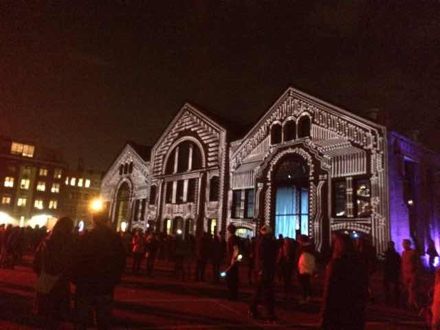
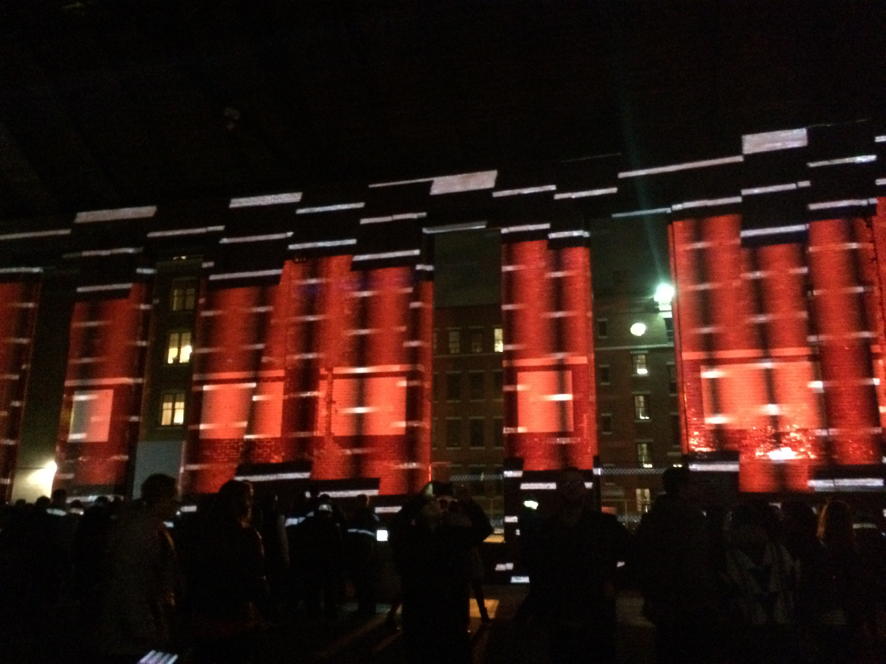
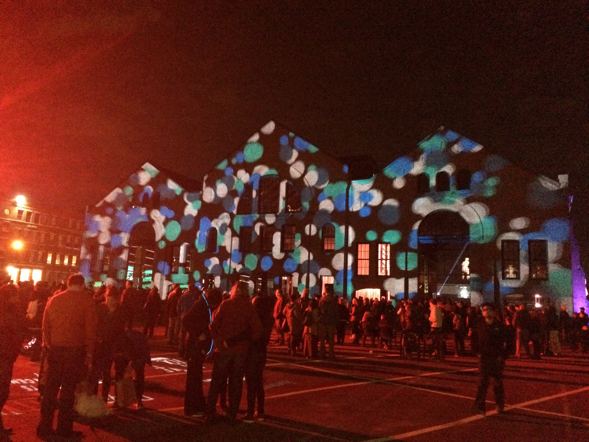
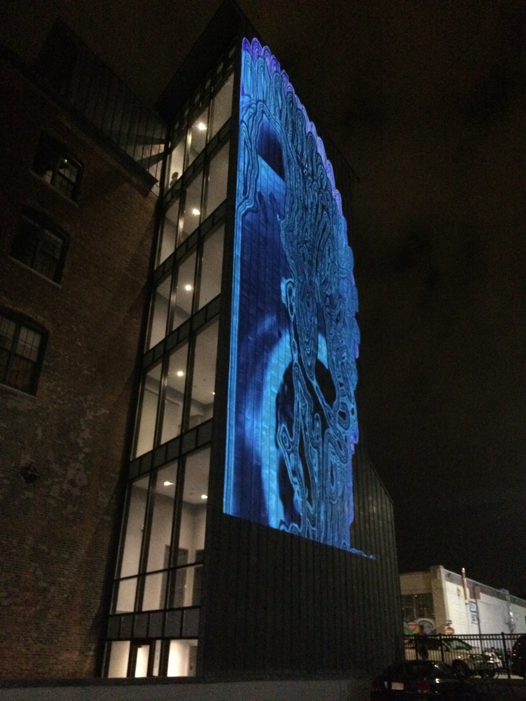
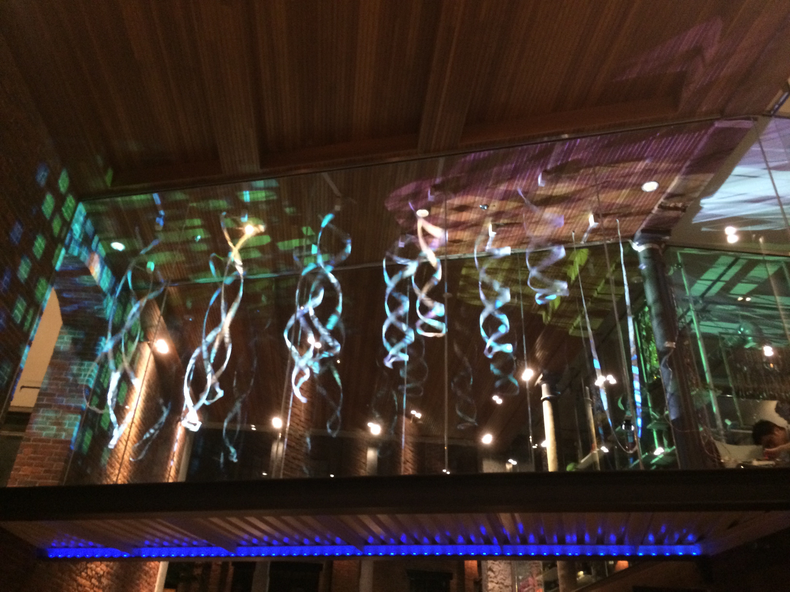

How can the light be used to create a context?
How does light impact the environment?
How can light be controlled?
The pictures were taken at ILLUMINUS BOSTON 2014.
ILLUMINUS is a nighttime contemporary art event established in Boston’s SoWa Arts District. ILLUMINUS features installations and performances to create an immersive, multi-sensory spectacle. Locally-organized, ILLUMINUS is Boston’s contribution to the global “nuit blanche” movement established in Paris and taking place in cities around the world.
Using light projected on the walls, the originally mundane buildings became medieval architectures. The perfect juxtaposition of the projected image and the original building shape makes this illusion more realistic. The choice of color combination also creates an environment of the Middle Ages.
 
Instruments were placed on the walls and played by imaginary musicians. The coordination of sound and images, the whole yard became a concert hall, and people were able to experience a different space within their home community.
Lights for Creating New Contexts
  The lights created a brand new space for the people attending the event. The location did not seem to be Boston again, it felt more like a garden in the Roman Empire.
In the darkness and with all these dreamy lights, people became more courageous and willing to expose themselves to the public. The lights has created a new context which gives them a sense of safety in this environment, and that all these seemingly embarrassing actions will disappear as soon as these lights turn off.
Color
Intensity
Size
Shape
Composition
Frequency
Light is a media that can be manipulated easier than many other art materials. It also does not require complicated artboards. By using lights and the darkness at night, the artists can usually create a complete new atmosphere at a common place where seems boring at daytime. Controlled by projectors and cameras, applying different color combinations, the lights transform the environment into Alice's wonderland. The audience can have a grand party, as well as discovering the unseen beauty of the city.